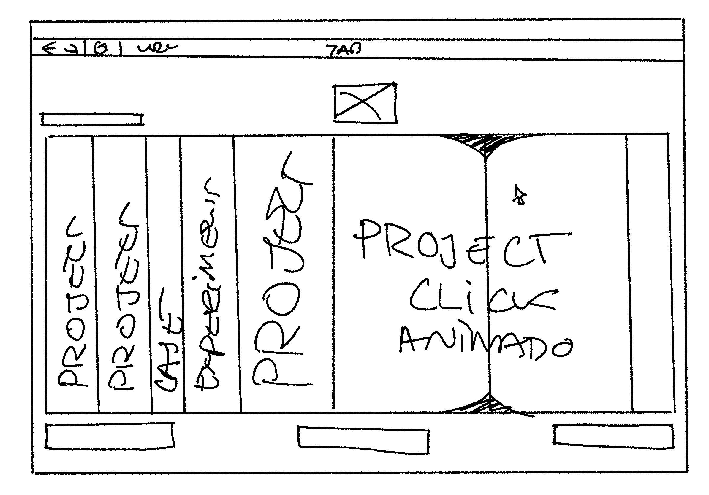
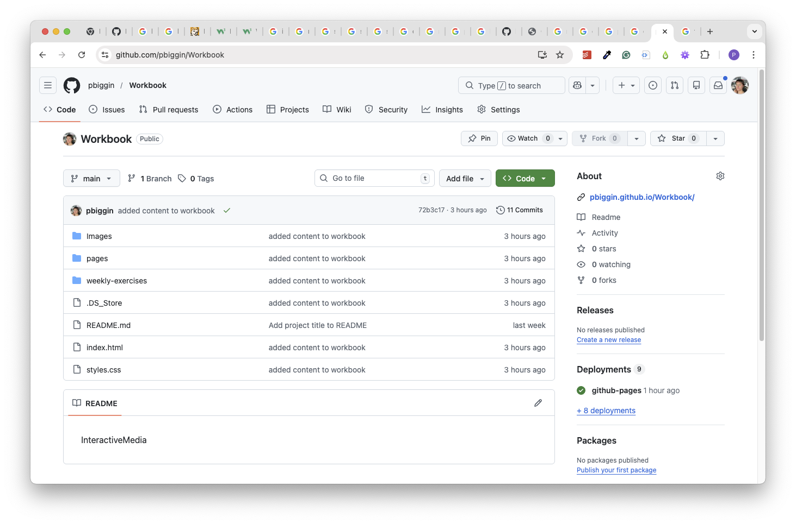
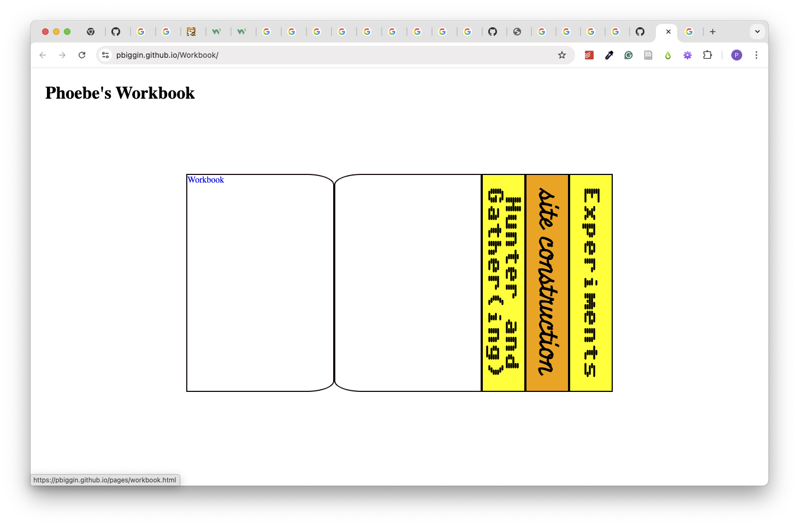
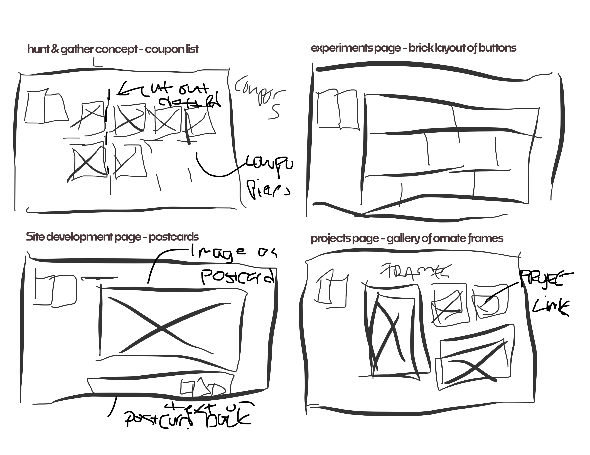
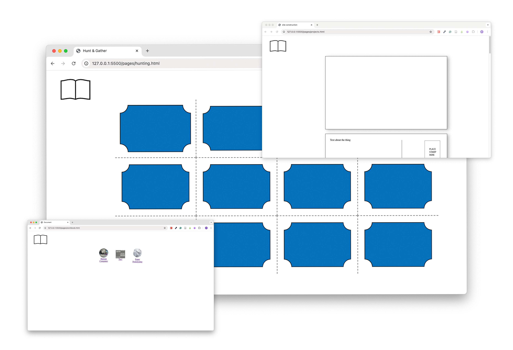
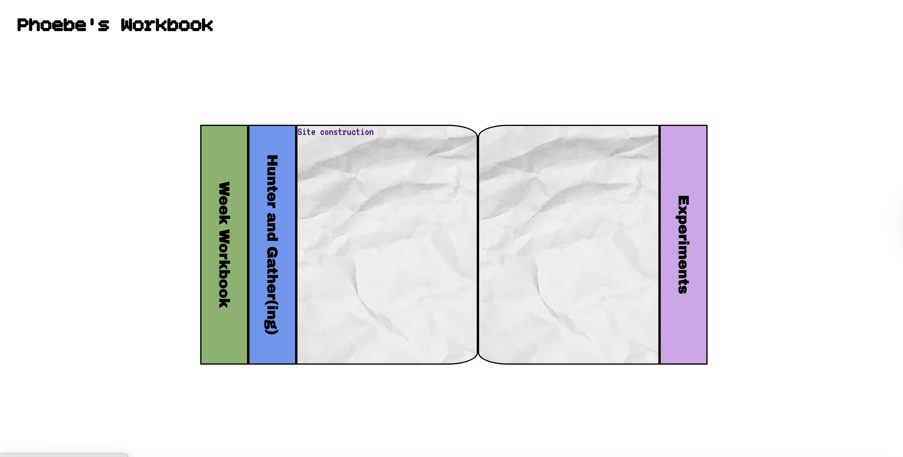

My first thoughts for my Interactive media website. I really seem to be drawn into skeumorphism this semester - possibly because I have the opportunity do more creative coding examples. Starting off, I feel that I want to follow through a series of 'collection' themes, as I'm just too excited to stick to one thing.
First Wireframe
Between Workshop 2 & 3
3000
Melbourne, Victoria

The project repository is now established! Here I set up my basic files structure of images (note: Which i had incorrectly capitalised at first...) Index.html, pages.
Birth of the repository
Github
3000
Melbourne, Victoria

At this point, I started coding my homepage! From my wireframes, I focused on working on the accordion-style book layout so I could really play with shape later down the line. My main concept for the home page was a bookshelf/library of sections, which I could expand later through the semester.
Here I used a little bit of Co-piliot to jumpstart the javascript behaviour for this (Claude Model) Ai to help me out with the page logic (Asking it why my code didn't do what I expected it to).. But most of the results ended up not helping too much, so it hasn't reached must sofisitcation yet.
First steps
Github
3000
Melbourne, Victoria

Once I had my homepage established (Fixing some broken little links I made), I had some spontaenous wireframe sessions (on the treadmill.. pardon the messiness) on each content directory extended beyond the homepage. From the top, my first (top left) idea was to collect my hunting & gathering content as a series of coupons on a coupon-cut sheet, like what you'd find in a magazine or junk mail letter - coupon collection!. Next (top right), I had an idea for my own inclusion: the experiments tab (solely built to house less-than-successful coding snippets from creating this site that I didn't want to lose yet), this one was simplier, but I wanted a selection of colourful bricks links for this page. Third (bottom left) was the concept for this page (meta...) to be a series of postcards sent to & from myself talking about snippets of time across this sites construction (as you can now see...). Finally, I had an idea for later down the line for the projects page (when we get to that) to be series of ornate gallery frames which would house links to the project(s).
more, quick ideas
out & about
3000
Melbourne, Victoria

more building! This time I built off of my very sketchy wireframes. I built three of the four wireframes I made. The workbook was less wireframe based, but I wish to incorperate some more javascript behaviours (drag and drop especially) here whren I can. I had some struggles with SVG and clipPAth here that I'll revisit at a later time with a fresh mind - It wouldn't crop correctly, and my coding research didn't seem to have much answers to solve it.
Building base elements
Workbook
3000
Melbourne, Victoria

Adding the cherry on top: although this page has much to grow. I added some styling elements of text (3 fonts, for fun) and played with some colour & text size randomisation with javascript. When suits, I can add a class that will assign a random colour from a matrix to be the background colour of a div. Added some textures, and styling to make this site feel more me.
Fun with styles
Workbook
3000
Melbourne, Victoria